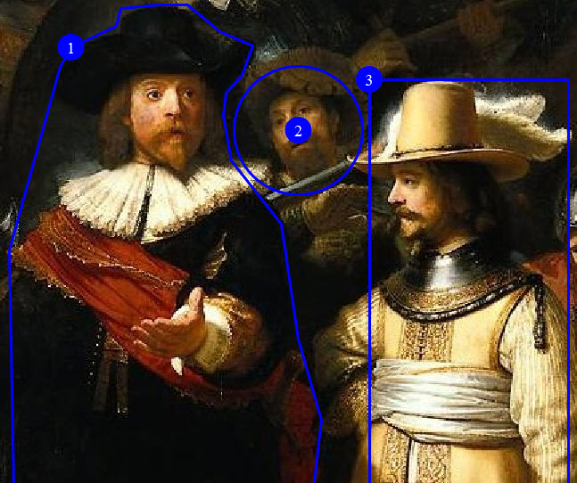

<imagemap>
A image map is an image with areas that are linked to DITA
topics, web pages, PDFs, or any other resources that can be targeted by
the @href attribute.
Usage information
A DITA image map references the image, followed by a series of
<area> elements that define the linkable
regions of the image. Each <area> element
specifies the shape and coordinates of the region, as well as the
link target and link text.
Rendering expectations
The rendering expectations for the
<imagemap> element depends on the output
format. For HTML-based formats, it can be rendered as standard HTML
images or as an alternate form of navigation, such as table-based
image maps. For print-based formats, it can be rendered as an image
and a list of the specified link targets.
Specialization hierarchy
The <imagemap> element is specialized from
<div>. It is defined in the utilities
domain module.
Content model
Attributes
The following attributes are available on this element: display attributes and universal attributes.
Example
This section contains examples of how the
<imagemap> element can be used:
The following code sample shows an image map for a detail of Rembrandt's "The Night Watch":
<imagemap id="the-night-watch">
<image href="Detail_from_The_Night_Watch.jpg" id="night_watch">
<alt>Detail from Rembrandt's The Night Watch</alt>
</image>
<!-- Area #1: Frans Banninck Cocq -->
<area>
<shape>poly</shape>
<coords>119, 4, 90, 7, 87, 20, 53, 36, 45, 51, 7, 188, 12, 467,
223, 464, 240, 315, 223, 254, 210, 168, 193, 146, 173, 121, 167,
87, 169, 70, 181, 57, 189, 35, 164, 24, 140, 4</coords>
<xref format="html" scope="external"
href="https://en.wikipedia.org/wiki/Frans_Banninck_Cocq">
Frans Banninck Cocq</xref>
</area>
<!-- Area #2: A member of the schutterij (the night watch) -->
<area>
<shape>circle</shape>
<coords>223, 98, 48</coords>
<xref format="html" scope="external"
href="https://en.wikipedia.org/wiki/Schutterij">A member of the
schutterij (the night watch)</xref>
</area>
<!-- Area #3: Willem_van_Ruytenburch -->
<area>
<shape>rect</shape>
<coords>276, 60, 425, 460</coords>
<xref format="html" scope="external"
href="https://en.wikipedia.org/wiki/Willem_van_Ruytenburch">
Willem van Ruytenburch</xref>
</area>
</imagemap>The following image shows the areas that are defined by the image map. Each of the three supported shapes are used.

The following table lists the defined areas, the shape used, alternate text, and link targets:
| Area | Shape | Alternate text | Link target |
|---|---|---|---|
| 1 | Polygon | Frans Banninck Cocq | Wikipedia entry for Frans Banninck Cocq |
| 2 | Circle | A member of the schutterij (the night watch) | Wikipedia entry for Schutterij |
| 3 | Rectangle | Willem van Ruytenburch | Wikipedia entry for Willem van Ruytenburch |
The following code sample shows an image map that specifies that
the entire image is the linkable region. Because the default
shape is specified, the <coords> element
is empty.
<imagemap id="portrait">
<image keyref="bronte-sisters">
<alt>Portrait of the Bronte sisters</alt>
</image>
<area>
<shape>default</shape>
<coords/>
<xref keyref="wiki-bronte-sisters"/>
</area>
</imagemap>